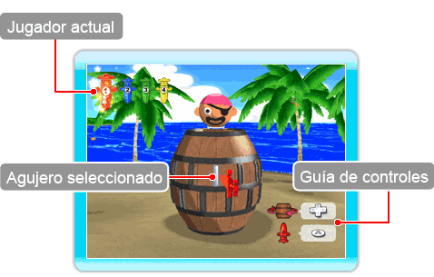
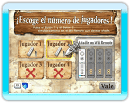
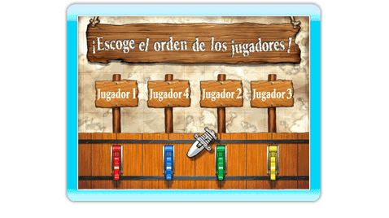

9 |
Fiesta Pop-Up |
 |
|
Los jugadores clavarán espadas en un barril por turnos, tratando de ver quién puede insertar el mayor número de espadas. Clava una espada en el agujero equivocado y el Capitán saldrá volando, lo que significará que la partida ha terminado para ti.
Selecciona Fiesta Pop-Up en la pantalla del menú principal y elige el número de jugadores y el orden en el que jugarán. Entonces continuarás a la pantalla de juego de Fiesta Pop-Up. ● La Pantalla de Juego ● Reglas de Fiesta Pop-Up

● Eligiendo el número de jugadores ○ Añadiendo Wii Remote ● Orden de jugadores  Una vez que hayas elegido el número de jugadores, se te pedirá que elijas el orden en el que jugarán. Cada vez que juegas el orden es aleatorio. |
 |
 |
 |